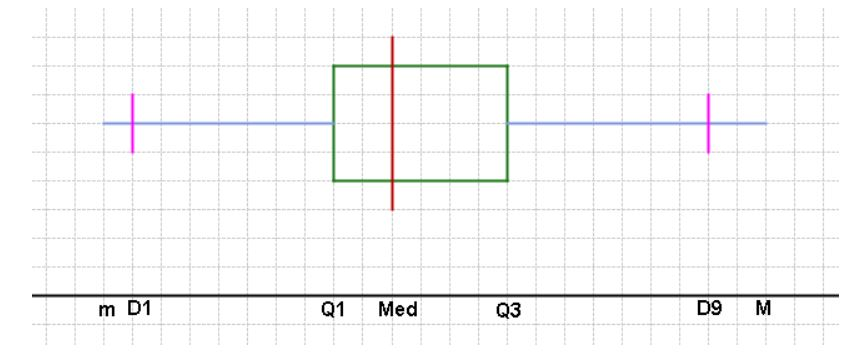
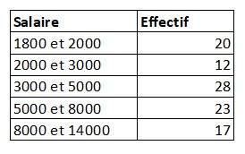

Les paramètres de dispersion
Contenu
Les paramètres de dispersion¶
Intervalle interquartile et interdécile¶
LES FRACTILES¶
LES FRACTILES
On appelle fractiles d’ordre k les (k-1) valeurs qui divisent les observations en k parties d’effectifs égaux.
3 quartiles \(Q_1\), \(Q_2\), \(Q_3\) qui divisent les observations en 4 parties égales.
4 quantiles \(q_1\), \(q_2\), \(q_3\), \(q_4\) qui divisent les observations en 5 parties égales.
9 déciles \(D_1\), \(D_2\), …, \(D_9\) qui divisent les observations en 10 parties égales.
99 centiles \(C_1\), \(C_2\), …, \(C_{99}\) qui divisent les observations en 100 parties égales
Intervalle interquartile¶
Intervalle interquartile
\(\Rightarrow\) \(\vartriangle Q\) = \(Q_3\) - \(Q_1\)
Intervalle interdécile¶
Intervalle interdécile
\(\Rightarrow\) \(\vartriangle D\) = \(D_9\) - \(D_1\)
Variance et Ecart-type¶
La variance
La variance est un paramètre de dispersion.
Moyenne arithmétique des carrés des écarts d’une variable statistique par rapport à la moyenne arithmétique de la distribution.
Soit X est une variable aléatoire. On appelle variance de X, le réel défini par:
Nous pouvons aussi montrer que la variance est la moyenne des carrés moins le carré de la moyenne.
Propriétés
Nous pouvons aussi montrer que:
\(V(ax)\) = \(a^{2}V(x)\) ; a \(\in\) \(\mathbb{R}\)
\(V(ax + b)\) = \(a^{2}V(x)\) ; a, b \(\in\) \(\mathbb{R}\)
\(V(x + y)\) = \(V(x - y)\) = \(V(x)\) + \(V(y)\)
\(V(a)=0\) ; Pour toute constante \(a\)
Ecart-type
L’écart-type est un paramètre de dispersion qui égale à la racine carrée de la variance.
Coefficient de variation
Le coefficient de variation (désigné par CV) se définit par la relation suivante :
Il permet de comparer le degré de variation d’un échantillon à un autre, même si les moyennes sont différentes. Il s’exprime généralement en %.
Box plot
La box plot ou boîte à moustaches, ou encore la boîte à pattes, est un petit diagramme représentant divers caractères de dispersion d’une série statistique.

Exercice 5
La répartition des salaires au sein d’une firme peut être résumée comme suit:

a) Calculer l’écart et l’intervalle interquartile.
b) Calculer la variance.
c) Déduire l’écart type.
d) Calculer le CV.
Exercices d’applications¶
Exercice 01¶
Exercice
Vous avez les données suivantes concernant les notes d’un groupe d’étudiants :
Notes : 3, 8, 12, 15, 17, 19, 20
Effectifs : 6, 4, 6, 10, 8, 2, 1
Identifier la variable étudiée et son type.
Récapituler ces données dans un tableau statistique
Calculez manuellement et sous python les fréquences et les fréquences cumulées croissantes
Calculer manuellement et sous python la moyenne arithmétique simple \(\overline{x}\)
Calculer manuellement et sous python le mode.
Calculer manuellement et sous python la médiane.
Exercice 02¶
Exercice
Vous disposez des données suivantes concernant les températures maximales mensuelles dans une ville :
Températures (°C) : 18, 22, 25, 27, 30
Effectifs (mois correspondants) : 3, 4, 5, 2, 3
Calculez les fréquences des différentes températures.
Calculez manuellement et sous python les fréquences cumulées croissantes
Calculer manuellement et sous python la moyenne arithmétique simple \(\overline{x}\)
Calculer manuellement et sous python le mode.
Calculer manuellement et sous python la médiane.
Exercice 03¶
Exercice
Vous avez les données suivantes concernant les tailles des individus dans une population :
Tailles (en cm) : 150-160, 160-170, 170-180, 180-190, 190-200
Effectifs (individus dans chaque tranche de taille) : 12, 25, 30, 15, 8
Calculez les fréquences des différentes tranches de tailles.
Calculez manuellement et sous python les fréquences cumulées croissantes
Calculer les valeurs centrales des tranches de tailles.
Calculer manuellement et sous python la moyenne arithmétique simple \(\overline{x}\)
Calculer manuellement et sous python le mode.
Calculer manuellement et sous python la médiane.
Représentez la courbe des fréquences cumulées croissantes pour illustrer la répartition cumulative des individus par taille.
Exercice 04¶
Exercice
Les données suivantes concernent la durée des trajets domicile-travail (en minutes) d’une population d’employés :
Durée des trajets (en minutes) : 0-10, 10-20, 20-30, 30-40, 40-50
Effectifs (employés correspondant à chaque intervalle de temps) : 20, 50, 40, 25, 10
Calculez les fréquences pour chaque intervalle de durée de trajet.
Créez la représentation graphique adéquate pour afficher la répartition des employés en fonction de la durée des trajets.
Calculez les caractéristiques de tendence centrales
Représentez la courbe des fréquences cumulées croissantes pour illustrer la répartition cumulative des individus par durée de trajet.